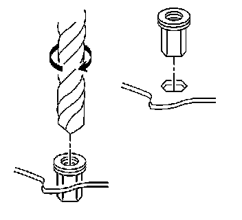

Luggage Carrier Rivet Nut Replacement
Luggage Carrier Rivet Nut Replacement
Removal Procedure
1. Remove the luggage carrier. Refer to Luggage Carrier Replacement (Avalanche/Escalade) Luggage Carrier Replacement (Suburban/Yukon XL/Escalade) Luggage Carrier Replacement (Tahoe/Yukon) .

Caution: Refer to Safety Glasses Caution .
2. Drill through the luggage carrier rivnut head using a 7.5 mm (0.295 in) drill bit.
3. Remove the rivnut from the roof.
Installation Procedure
1. Using a 10 mm (0.3937 in) drill bit, drill the rivnut hex shape hole in the roof out to a round 10 mm hole.
2. Install a replacement rivnut to the hole in roof using a rivnut tool, or equivalent.
3. Install the luggage carrier. Refer to Luggage Carrier Replacement (Avalanche/Escalade) Luggage Carrier Replacement (Suburban/Yukon XL/Escalade) Luggage Carrier Replacement (Tahoe/Yukon) .